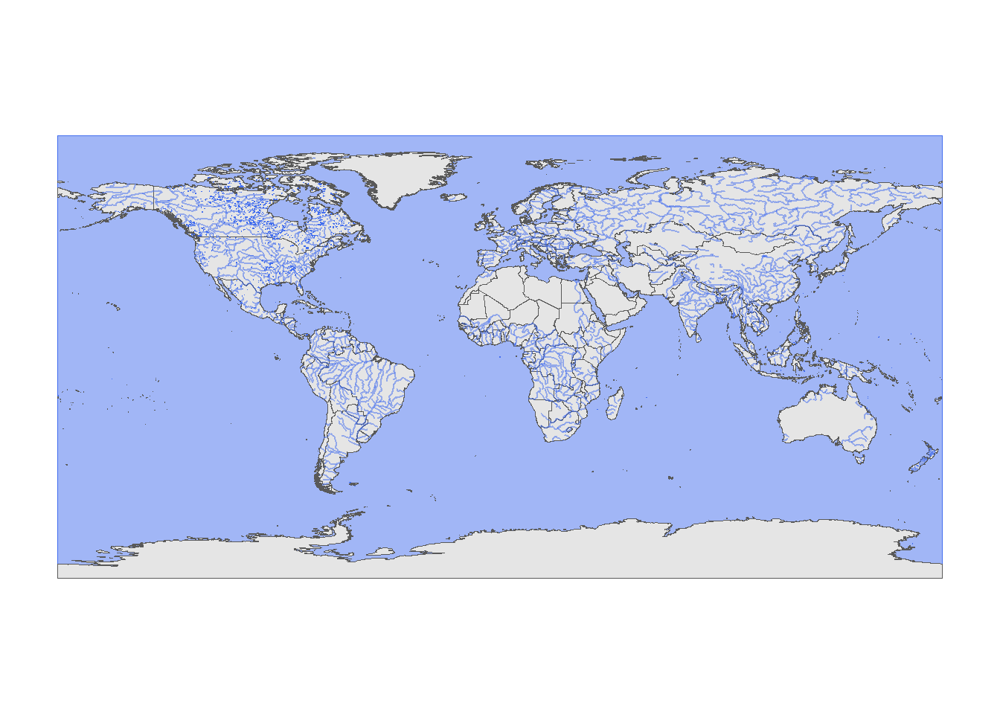

Comme toute analyse, les analyses spatiales commencent par l’exploration des données. La présence d’un patron spatial dans les données dépend très souvent de notre échantillonnage, mais elle peut aussi être le résultat de circonstances que nous n’avons pas pu contrôler. Que ce soit l’un ou l’autre, il existe des façons de vérifier si des patrons spatiaux sont présents dans nos modèles et si nos mesures sont sujettes à une autocorrélation spatiale. Nous allons donc utiliser des indices pour vérifier la présence de ces patrons:
L’indice \(I\) de Moran, ou Moran Global permet de tester si une corrélation significative est présente entre régions voisines.
L’indice de Moran est un coefficient d’autocorrélation spatiale des \(z\), pondéré par les poids \(w_{ij}\). Il prend donc des valeurs entre -1 et 1.
\[I = \frac{N}{\sum_i \sum_j w_{ij}} \frac{\sum_i \sum_j w_{ij} (z_i - \bar{z}) (z_j - \bar{z})}{\sum_i (z_i - \bar{z})^2}\]
Dans cette équation, nous reconnaissons l’expression d’une corrélation, soit le produit des écarts à la moyenne de deux variables \(z_i\) et \(z_j\), divisé par le produit de leurs écarts-types (qui est le même, donc on obtient la variance). La contribution de chaque paire \((i, j)\) est multipliée par son poids \(w_{ij}\) et le terme à gauche (le nombre de régions \(N\) divisé par la somme des poids) assure que le résultat soit borné entre -1 et 1. L’auto-corrélation spatiale positive indique que les éléments ou les valeurs sont regroupés dans l’espace, et les emplacements voisins ont tendance à avoir des valeurs ou des caractéristiques similaires. L’auto-corrélation spatiale négative, en revanche, indique que les éléments ou les valeurs sont dispersés dans l’espace, et les emplacements voisins ont tendance à avoir des valeurs ou des caractéristiques différentes. Puisque la distribution de \(I\) est connue en l’absence d’auto-corrélation spatiale, cette statistique permet de tester l’hypothèse nulle selon laquelle il n’y a pas de corrélation spatiale entre régions voisines.
Afficher les données sur une carte est fort utile pour planifier l’analyses. Il y a plusieurs façon de réaliser des cartes sur R. Parmi les packages qui vont vous permettre d’afficher des cartes, vous trouverez rnaturalearth. Pour s’entrainer, nous allons utiliser un jeu de données où le débourrement (budbre),un phase phénologique qui déterminent le début de la saison de croissance chez les arbres. Chaque point indique les coordonnées d’un peuplement où la date du débourrement a été observé. La date est indiqué en jour juliens (DOY-Day of the year).
Pour commencer, nous importons les données accompagnées de leurs coordonnées. Lors de cette étape, nous allons produire un shapefile avec la fonction st_as_sf du package sf. A cette étape, il est crucial de spécifier le système de référence géodésique (CRS - Coordinate Reference System) utilisé pour positionner les points dans l’espace. Le CRS ne se limite pas seulement à fournir des informations sur l’unité de mesure (angles, distances) et la projection utilisée, mais il englobe également des détails essentiels tels que le sphéroïde de référence (la forme approximative de la terre : conique, cylindrique, ou planaire) et un datum (fournissant des informations sur l’orientation du sphéroïde par rapport à la terre). Ces détails sont cruciaux pour garantir la précision des calculs effectués sur les données spatiales. Par exemple, lorsque nous calculons les distances entre les points, l’unité de mesure de la distance dépend du CRS utilisé. De plus, comprendre les paramètres du CRS permet de projeter correctement les données dans d’autres systèmes de coordonnées si nécessaire, assurant ainsi la cohérence des analyses géospatiales. Vous pouvez explorer et vérifier les informations relatives au CRS sur des sites spécialisés tels que https://epsg.io/. Le CRS le plus couramment utilisé est généralement le WGS84, qui est également celui employé dans les systèmes de positionnement par satellite GPS (https://epsg.io/4326).s
require(rnaturalearth)## Le chargement a nécessité le package : rnaturalearth## Warning: le package 'rnaturalearth' a été compilé avec la version R 4.3.2## The legacy packages maptools, rgdal, and rgeos, underpinning the sp package,
## which was just loaded, will retire in October 2023.
## Please refer to R-spatial evolution reports for details, especially
## https://r-spatial.org/r/2023/05/15/evolution4.html.
## It may be desirable to make the sf package available;
## package maintainers should consider adding sf to Suggests:.
## The sp package is now running under evolution status 2
## (status 2 uses the sf package in place of rgdal)## Support for Spatial objects (`sp`) will be deprecated in {rnaturalearth} and will be removed in a future release of the package. Please use `sf` objects with {rnaturalearth}. For example: `ne_download(returnclass = 'sf')`require(sp)## Le chargement a nécessité le package : sprequire(sf)## Le chargement a nécessité le package : sf## Linking to GEOS 3.11.2, GDAL 3.6.2, PROJ 9.2.0; sf_use_s2() is TRUEP1phasespatialtraining1 <- P1phasespatialtraining1 <-
read.csv("C:/Users/buttoval/Documents/ECL8202/donnees/P1phasespatialtraining1.csv",
sep = ";")
P1phasespatialtraining1_shapefile <- st_as_sf(P1phasespatialtraining1,
coords = c("x_long", "y_lat"), crs = "WGS84")Une fois produit le shapefile, il est utiliser la fonction ne_countries pour telesharger une carte du pays où nous avons pris les données. Les donneées sont associé à un catalogue de cartes publiques: Natural Earth Data (https://www.naturalearthdata.com/). Les cartes peuvent aussi être télécharge par le site et sont proposé dans différentes échelles:large (1:10 m), medium (1:50 m) et small (1:110 m) selon le niveau de détail souhaité.
On peut télécharger les cartes directement à partir de R avec la fonction ne_download. Voici une prémiere carte du monde, à laquelle in peut sur-poser des courches avec les lacs et les océans
https://cran.r-project.org/web/packages/rnaturalearth/vignettes/rnaturalearth.html
sfdf_world <- ne_download(scale = 10, type = "countries", returnclass = "sf")
sfdf_lakes <- ne_download(scale = 10, type = "lakes_north_america",
category = "physical", returnclass = "sf")
sfdf_oceans <- ne_download(scale = 10, type = "ocean", category = "physical",
returnclass = "sf")
sfdf_riverslake <- ne_download(scale = 10, type = "rivers_lake_centerlines",
category = "physical", returnclass = "sf")
ggplot(data = sfdf_world) + geom_sf(data = sfdf_oceans, col = "royalblue2",
fill = "royalblue2", alpha = 0.5) + geom_sf() + geom_sf(data = sfdf_lakes,
col = "royalblue2", alpha = 0.5) + geom_sf(data = sfdf_riverslake,
col = "royalblue2", alpha = 0.5)
Afin de mieux visualiser nos points, il est maintenant utile de restreindre la carte à notre zone d’intérêt, qui est le nord de l’Amérique. Nous pouvons utiliser geom_rect pour afficher uniquement cette zone. Si nécessaire, nous pouvons également créer un carré englobant nos coordonnées en utilisant geom_rect. Les coordonnées du carré peuvent être obtenues à l’aide de la fonction st_box. Le CRS par défaut des objects obtenus par rnaturalearth est WGS84, nous n’anvons donc pas besoin de le transformer mais on aurait pu utiliser rajouter le code “shapefile %>% st_transform( notre CRS )” pour une reprojection.
coordbox <- as.data.frame(st_bbox(P1phasespatialtraining1_shapefile))
ggplot(data = sfdf_world) + geom_sf(data = sfdf_oceans, col = "royalblue2",
fill = "royalblue2", alpha = 0.5) + geom_sf() + geom_sf(data = sfdf_lakes,
col = "royalblue2", alpha = 0.5) + geom_sf(data = sfdf_riverslake,
col = "royalblue2", alpha = 0.5) + geom_point(P1phasespatialtraining1,
mapping = aes(x_long, y_lat, color = DOY)) + scale_color_gradient(name = "Budbreak (DOY)",
low = "white", high = "darkgreen") + coord_sf(xlim = c(-95,
-57.1), ylim = c(40, 62.62)) + geom_rect(xmin = coordbox$x[1],
ymin = coordbox$x[2], xmax = coordbox$x[3], ymax = coordbox$x[4],
fill = NA, colour = "black", size = 1)## Warning: Using `size` aesthetic for lines was deprecated in ggplot2 3.4.0.
## ℹ Please use `linewidth` instead.
## This warning is displayed once every 8 hours.
## Call `lifecycle::last_lifecycle_warnings()` to see where this warning was
## generated.On observe déjà une tendance à un débourrement (budbreak) plus précoce vers le sud-ouest et plus tardif vers le nord-est. Mais comment valider ces patrons?
On peut commencer par calculer l’indice \(I\) de Moran. On va faire ça en différentes étapes:
On commence par la création de la matrice de coordonnées : Nous commençons par créer une matrice contenant les coordonnées latitudinales et longitudinales de chaque point d’observation. Cela nous permettra de représenter spatialement nos données.
require(spdep)## Le chargement a nécessité le package : spdep## Warning: le package 'spdep' a été compilé avec la version R 4.3.2## Le chargement a nécessité le package : spData## To access larger datasets in this package, install the spDataLarge
## package with: `install.packages('spDataLarge',
## repos='https://nowosad.github.io/drat/', type='source')`latlon = cbind(P1phasespatialtraining1$x_long, P1phasespatialtraining1$y_lat)Conversion en objet spatial : Ensuite, nous convertissons cette matrice en un objet spatial afin de pouvoir effectuer des analyses spatiales.
latlon<-coordinates(latlon)Création des identifiants : Nous générons des identifiants uniques pour chaque point, ce qui sera utile pour la création de la liste de voisins.
IDs <- row.names(as.data.frame(x = P1phasespatialtraining1$x_long,
y = P1phasespatialtraining1$y_lat))Création de la liste de voisins : Nous utilisons l’algorithme des k plus proches voisins pour créer une liste de voisins pour chaque point. Ici, nous utilisons k=1 pour considérer uniquement les liens directs entre les points les plus proches. Cette ligne crée une liste de voisins basée sur le plus proche voisin (k=1) en utilisant les coordonnées latitudinales et longitudinales. Cela signifie que chaque point est lié à son voisin le plus proche. étant donnée que k=1 alprs chaque observation a un voisin. On souhaite évaluer l’autocorrélation spatiale en considérant uniquement les liens directs entre les points les plus proches. Cela peut être approprié dans certains cas, notamment lorsque l’on suppose que l’influence spatiale décroît rapidement avec la distance et que les valeurs sont fortement influencées par leur voisinage immédiat.
Neigh_nb <- knn2nb(knearneigh(latlon, k = 1, longlat = TRUE),
row.names = IDs)Standardisation des poids : Nous standardisons les poids de la liste de voisins de manière à ce que la somme des poids pour chaque unité spatiale soit égale à 1. Cela permet une comparaison appropriée des poids entre différentes unités spatiales.Ici, style = “W” indique que les poids pour chaque unité spatiale sont standardisés de manière à ce que leur somme soit égale à 1 (ceci est appelé standardisation par ligne).
Neigh_nb_moran<-nb2listw(Neigh_nb,style="W")Test de Moran : Enfin, nous appliquons le test de Moran sur nos données. Cela nous permet d’évaluer l’autocorrélation spatiale de notre variable d’intérêt (dans ce cas, le jour de l’année du débourrement des plantes) en utilisant la liste de voisins standardisée que nous avons créée précédemment.
Moran_I <- moran.test(P1phasespatialtraining1$DOY, listw = Neigh_nb_moran)
Moran_I##
## Moran I test under randomisation
##
## data: P1phasespatialtraining1$DOY
## weights: Neigh_nb_moran
##
## Moran I statistic standard deviate = 12.302, p-value < 2.2e-16
## alternative hypothesis: greater
## sample estimates:
## Moran I statistic Expectation Variance
## 0.557497347 -0.001297017 0.002063322Dans le tableau, nous trouvons les valeurs de l’écart-type standard de la statistique de Moran I (Moran I statistic standard deviate). Cela indique la déviation standardisée de la statistique de Moran I par rapport à sa moyenne sous l’hypothèse nulle d’absence d’autocorrélation spatiale. Lorsque la déviation standardisée de la statistique de Moran I s’écarte de zéro vers des valeurs positives élevées, cela suggère une forte autocorrélation spatiale positive, ce qui signifie que les valeurs similaires ont tendance à être regroupées dans l’espace. Dans notre cas, nous avons obtenu une valeur de 12.302, ce qui est plutôt élevée.
La statistique de Moran I est de 0.6, ce qui indique une autocorrélation spatiale positive. Cela signifie qu’il existe une tendance pour les valeurs similaires à se regrouper dans l’espace
La valeur p associée à la statistique de Moran I est inférieure à 0,05, ce qui suggère un rejet de l’hypothèse nulle. Dans ce cas, l’hypothèse nulle serait l’absence d’autocorrélation spatiale.
Dans l’ensemble ces résultats suggèrent une forte autocorrélation spatiale (statistique Moran I élevée) avec une très faible probabilité que cela soit dû au hasard (p-value très faible), et l’hypothèse alternative est que l’autocorrélation spatiale est plus grande que prévu par le hasard.
“Expectation” fait référence à la valeur attendue de la statistique de Moran I sous l’hypothèse nulle d’absence d’autocorrélation spatiale. Plus précisément, c’est la moyenne théorique de la statistique de Moran I calculée sur de nombreuses répétitions aléatoires de l’échantillon dans lequel la distribution spatiale des valeurs est aléatoire.Si la statistique de Moran I observée diffère considérablement de cette valeur attendue, cela suggère une autocorrélation spatiale significative dans vos données.
Si l’autocorrelation spaciale est significatif, il est possible de calculer le Moran Local qui évalue l’autocorrélation spatiale pour chaque unité spatiale individuelle (points, zones etc..). Cet indicateur identifie les zones spécifiques où l’autocorrélation spatiale est significativement différente de celle attendue par hasard.
Pour calculer l’indice de Moran sur R il est possible
\[I_i = \frac{(z_i - \bar{z})}{S^2} \sum_{j} w_{ij} (z_j - \bar{z})\]
où \(z_i\) est la valeur de la variable pour l’unité spatiale \(i\),\(\bar{z}\) est la moyenne des valeurs de la variable pour toutes les unités spatiales.\(z_{ij}\) est le poids entre les unités spatiales \(i\) et \(j\), \(z_j\) est la valeur de la variable pour l’unité spatiale \(j\); S est la variance de la variable \(S^2\)
Pour calculer l’indice de Moran Local on commence par le calcul des distances entre les voisins les plus proches :
dstsP1 <- unlist(nbdists(Neigh_nb, latlon))On Calcul ensuite la distance maximale entre les voisins les plus proches et on crée différentes structures de voisinage basées sur la distance :
max_1nnP1 <- max(dstsP1)
Neigh_kd2P1 <- dnearneigh(latlon, d1 = 0, d2 = 2 * max_1nnP1,
row.names = IDs)
# neighbors within 2X maximum distanceCréation de poids pour la structure de voisinage et Calcul de l’indice de Moran local. Nous pouvons choisir le style B (binaire) pour le création de poids de la structure de voisinage. Nous choisissons d’utiliser le Style de pondération binaire (B) car chaque paire d’unités spatiales est considérée comme soit connectée (1) soit non connectée (0). Ceci facilitera l’identification des clusters spatiaux, ce qui est en fin de compte l’objectif principal de l’analyse de Moran local.
weightsP1 <- nb2listw(Neigh_kd2P1, style = "B")
# row standardized binary weights, using minimum distance
# for one neighbor
weightsP1## Characteristics of weights list object:
## Neighbour list object:
## Number of regions: 772
## Number of nonzero links: 182720
## Percentage nonzero weights: 30.65854
## Average number of links: 236.6839
## 2 disjoint connected subgraphs
##
## Weights style: B
## Weights constants summary:
## n nn S0 S1 S2
## B 772 595984 182720 365440 187478256localP1 <- localmoran(x = P1phasespatialtraining1$DOY, listw = nb2listw(Neigh_kd2P1,
style = "B"))
head(localP1)## Ii E.Ii Var.Ii Z.Ii Pr(z != E(Ii))
## 1 -62.134967 -0.067335093 30.035740 -11.325203 9.845025e-30
## 2 49.310064 -0.111485688 46.483906 7.248782 4.205357e-13
## 3 148.952876 -0.760734852 465.290603 6.940634 3.903441e-12
## 4 2.430195 -0.004170537 2.115739 1.673612 9.420693e-02
## 5 -47.977739 -0.737517583 359.903025 -2.490114 1.277022e-02
## 6 95.099477 -0.230898178 139.861426 8.060878 7.574863e-16Dans l’objet crée par la fonction localmoran, nous pouvons trouver: -L’indice de Moran local pour l’unité spatiale \(i\) Ii: une mesure l’autocorrélation spatiale locale pour cette unité spatiale en prenant en compte les valeurs de ses voisins locaux. -L’espérance de l’indice de Moran local (E.Ii): la valeur moyenne de l’indice de Moran local dans un ensemble d’échantillons aléatoires, sous l’hypothèse nulle d’absence d’autocorrélation spatiale. -La variance de l’indice de Moran local (Var.Ii): la dispersion des valeurs de l’indice de Moran local autour de son espérance. Une variance élevée suggère une grande variabilité dans les valeurs de l’indice de Moran local. - Le score \(Z\) de l’indice de Moran local (Z.Ii): le nombre d’écarts-types par rapport à l’espérance dans l’indice de Moran local observé - Pr(z != E(Ii)): La probabilité que le score Z de l’indice de Moran local diffère de l’espérance. Si cette probabilité est inférieure à un seuil alpha spécifié (généralement 0.05), on rejette l’hypothèse nulle d’absence d’autocorrélation spatiale locale en faveur de l’hypothèse alternative d’autocorrélation spatiale locale significative.
Avec les valeurs de Z, il est possible de séparer les observations en groupes basés sur l’indice de Moran local et d’identifier les zones où l’agrégation spatiale est significative.Ces catégories sont basées sur les seuils de significativité des scores Z pour l’indice de Moran local. Ils sont utilisés pour identifier les clusters spatiaux significatifs à différents niveaux de confiance statistique (par exemple, 90%, 95% et 99%). La catégorie “4-random” est utilisée pour les unités spatiales où l’autocorrélation spatiale n’est pas significative.
moran.mapP1 <- cbind(P1phasespatialtraining1_shapefile,
localP1)
moran.mapP1$groups_class <- with(moran.mapP1, ifelse(Z.Ii >=
-24 & Z.Ii < -2.58, "CI99", ifelse(Z.Ii >= -2.58 &
Z.Ii < -1.96, "CI95", ifelse(Z.Ii >= -1.96 & Z.Ii <
-1.65, "CI90", ifelse(Z.Ii >= -1.65 & Z.Ii < 1.65,
"random", ifelse(Z.Ii >= 1.65 & Z.Ii < 1.96, "CI90",
ifelse(Z.Ii >= 1.96 & Z.Ii < 2.58, "CI95",
"CI99")))))))ggplot() + geom_sf(data = moran.mapP1, aes(color = groups_class)) +
scale_color_manual(values = c(CI99 = "#ff0000", CI95 = "#ffa500",
CI90 = "#ffff00", random = "#00ff00"), name = "Groups") +
labs(title = "Moran Local Groups") + theme_minimal()La plus part des valeurs tombent dans le CI99 (intervalle de confiance à 99%). Les valeurs de la variable étudiée, le jour de débourrement (DOY), sont fortement regroupées dans l’espace, formant des clusters spatiaux significatifs.
Si nous sommes intéressés par l’investigation des clusters spatiaux significatifs, il serait possible de réaliser une analyse des points chauds et des points froids (hotspot-coldspot) pour déterminer si les valeurs très élevées et celles qui sont plus petites ont tendance à s’agglomérer dans des parties différentes de la carte. Pour ce faire, nous avons besoin de calculer un autre indice, le Getis-Ord G \(G_i*\) qui indique la concentration spatiale et qui évalue si les valeurs d’une variable sont réparties de manière aléatoire dans l’espace ou si elles présentent une tendance à la concentration spatiale, c’est-à-dire des clusters de valeurs élevées ou faibles. \(G_i*\) calcule des statistiques z pour chaque unité spatiale et peut être utilisé pour identifier les hotspots (valeurs élevées entourées de valeurs élevées) et les coldspots (valeurs faibles entourées de valeurs faibles). Encore une fois, la fonction localG_perm du package spdep nous aide à calculer \(G_i*\) à partir de la matrice de pondération spatiale que nous avons utilisée avant:
local_gpermP1 <- localG_perm(P1phasespatialtraining1_shapefile$DOY,
weightsP1)
P1phasesta_shape <- cbind(P1phasespatialtraining1_shapefile,
gstat = as.matrix(local_gpermP1))Également, il est possible de séparer les groupes sur la base des valeurs de Z pour identifier les points chauds (Z positifs) et les points froids (Z négatifs). Les hotspots sont associés à des valeurs de Z positives, ce qui signifie que les valeurs dans ces zones sont plus élevées que prévu par rapport à la répartition spatiale globale des données. Les coldspots sont associés à des valeurs de Z négatives, ce qui signifie que les valeurs dans ces zones sont plus faibles que prévu par rapport à la répartition spatiale globale des données.
P1phasesta_shape$groups_class <- with(P1phasesta_shape,
ifelse(gstat >= min(P1phasesta_shape$gstat) & gstat <
-2.58, "1-CI99", ifelse(gstat >= -2.58 & gstat <
-1.96, "2-CI95", ifelse(gstat >= -1.96 & gstat <
-1.65, "3-CI90", ifelse(gstat >= -1.65 & gstat <
1.65, "4-random", ifelse(gstat >= 1.65 & gstat <
1.96, "5-CI90", ifelse(gstat >= 1.96 & gstat <
2.58, "6-CI95", "7-CI99")))))))
P1phasesta_shape$groups_classlabelled <- as.factor(P1phasesta_shape$groups_class)
levels(P1phasesta_shape$groups_classlabelled) <- list(`Cold spot - 99% CI` = "1-CI99",
`Cold spot - 95% CI` = "2-CI95", `Cold spot - 90% CI` = "3-CI90",
`Not significant` = "4-random", `Hot spot - 90% CI` = "5-CI90",
`Hot spot - 95% CI` = "6-CI95", `Hot spot - 99% CI` = "7-CI99")
ggplot() + geom_sf(data = P1phasesta_shape, aes(color = groups_classlabelled)) +
scale_color_manual("", values = c("#4575b4", "#74add1",
"#abd9e9", "#fee090", "#fdae61", "#f46d43",
"#d73027")) + labs(title = "Hot spot-Cold spot analysis") +
theme_minimal()